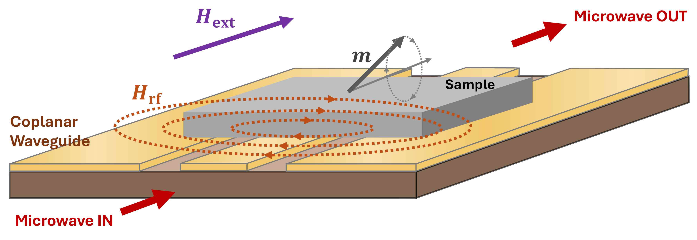

Overview
Ferromagnetic Resonance (FMR) is a powerful technique for studying the dynamic magnetic properties of materials. By applying a microwave field, FMR excites the precession of magnetization in a material, allowing the extraction of key magnetic parameters such as the saturation magnetization and damping constant. It is widely used for investigating thin films and nanostructures in spintronics research.
Schematic illustration of the ferromagnetic resonance technique. A coplanar waveguide transmits microwaves, inducing an oscillating magnetic field (Hrf) that excites the magnetization (m) of the sample. An external magnetic field (Hext) is applied in the sample plane (often parallel to the waveguide), and the microwave absorption is measured as a function of Hext and microwave frequency.
Technical Details
- Dipolar electromagnet for DC magnetic fields up to 1 T
- Microwave synthesizer for RF frequencies up to 20 GHz
- AM modulation of RF signal and a.c. modulation of external magnetic field
- Double lock-in detection for improved signal-to-noise ratio
- LabVIEW interface for data acquisition

Pictures of the FMR setup, where the sample (~ 5 mm x 5 mm) is loaded on the coplanar waveguide.
Some Results
The FMR setup has been successfully used to extract key parameters such as the magnetization (𝑀S) and Gilbert damping coefficient (𝛼) for a range of materials. Shown below is the example of data acquired for a sputtered permalloy thin-film.

Top: Resonance spectra of a permalloy (NiFe) sputtered thin-film, 6 nm in thickness capped with 1.2 nm of AlOx.
Bottom: Data fitting for extracting the saturation magnetization and Gilber damping coefficient (α) of the permalloy thin-film.